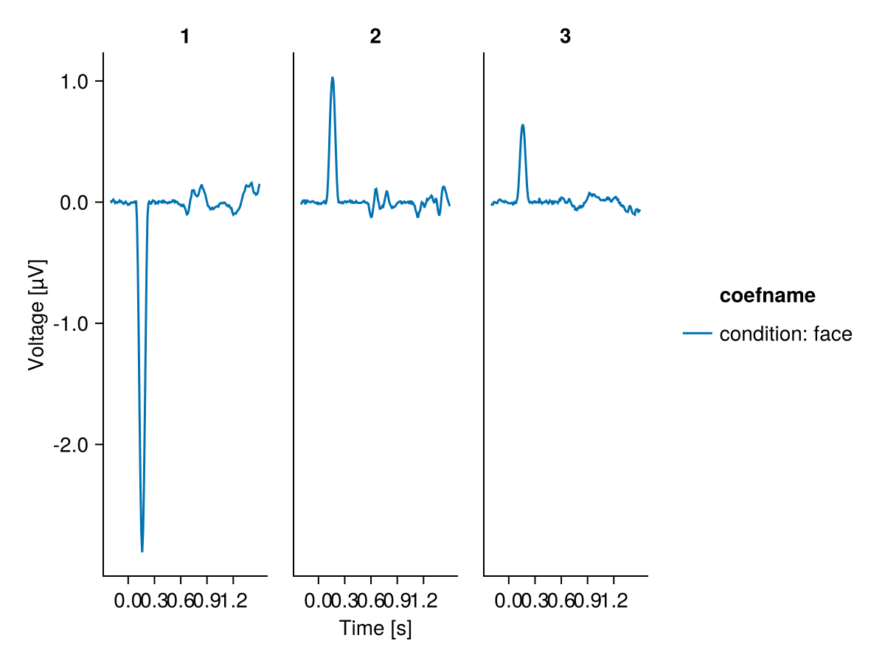
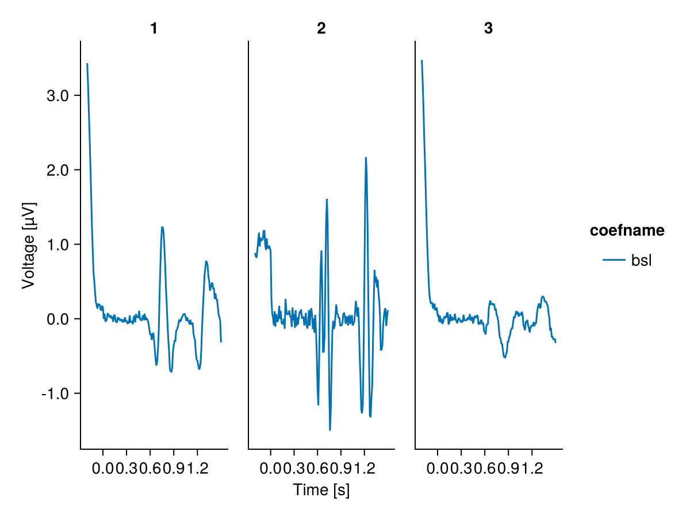
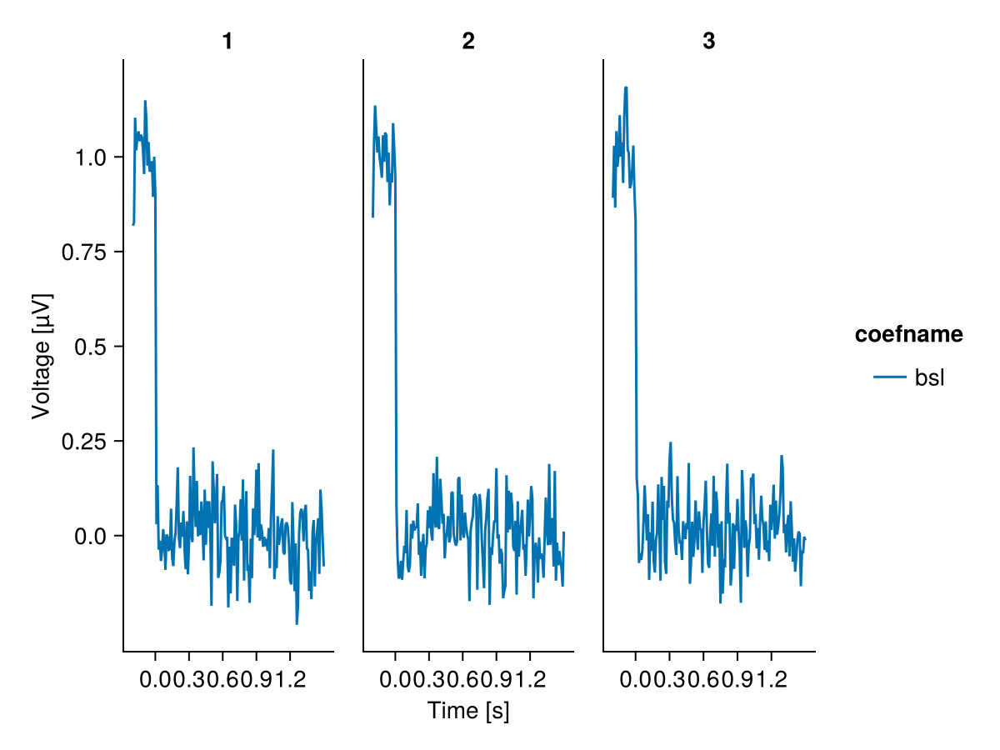

Baseline regression
Classical baseline correction subtracts the mean of a pre-stimulus window from each epoch. This assumes the baseline is pure noise - but if the baseline co-varies with the epoch (through noise correlations, slow drifts, or the overlap of the previous trial), correcting removes that shared variance from the whole epoch and can bias the estimated effects.
Baseline regression (Alday et al., 2021) instead treats the baseline as a predictor: it is entered into the model as a channel-varying covariate, because the baseline amplitude differs per channel. In Unfold.jl, channel-varying predictors are marked with bychannel: the model is fit per channel, with each channel's epochs regressed on its own baseline. No data is subtracted - the bsl coefficient tells you how strongly the epoch co-varies with the baseline at every latency.
Set things up
using Unfold
using UnfoldSim
using UnfoldMakie
using DataFrames
using StatisticsSimulate overlapping EEG data
We simulate multichannel EEG with UnfoldSim.jl, with trials overlapping so that the previous trial is not yet over when the next one starts. The simulation projects the components onto all 227 channels - for this tutorial we keep three example channels:
data, evts = UnfoldSim.predef_eeg(; multichannel = true, overlap = (0.5, 0.2))
data = data[[130, 184, 50], :]3×120198 Matrix{Float64}:
-0.133298 0.0587106 0.0200831 … -0.329687 -0.418359 -0.0646553
-0.108575 0.274595 -0.0627942 -0.328508 0.0107944 -0.108156
0.0527882 0.129116 0.156598 0.0165282 0.0135138 -0.0994902We drop the last events, whose epochs would run past the end of the recording, and cut the continuous data into epochs:
evts = evts[evts.latency .<= size(data, 2) - 150, :]
data_e, times = Unfold.epoch(data = data, tbl = evts, τ = (-0.2, 1.5), sfreq = 100)
size(data_e) # channel × time × epoch(3, 171, 1998)Baseline regression
For each channel and epoch, we compute the mean baseline and enter it into the event table as one value per channel per row:
bsl_ix = findall(t -> t <= 0.0, times)
evts.bsl = [vec(mean(data_e[:, bsl_ix, i]; dims = 2)) for i in axes(data_e, 3)]1998-element Vector{Vector{Union{Missing, Float64}}}:
[-0.0336338112923258, -0.027422137945981567, -0.04726210132153904]
[0.05904149901040442, 0.015539854353839297, 0.029717582233671734]
[0.07585864348707314, 0.06416403841149003, 0.07874528145593121]
[-0.05023053041078836, -0.0395682466738186, -0.05625251089908618]
[0.09114868612234155, 0.025677578543427743, -0.0982088913488997]
[0.05881264081444711, 0.02044826978069005, 0.07554391271710344]
[0.005500242014475777, -0.0036363706436058733, 0.051327006675028715]
[0.39054018461480033, 0.032282510256080074, -0.42642092924976555]
[0.35603532831303625, -0.025010063489168788, -0.3666527096282347]
[0.15406183820399633, 0.11992879507731952, -0.03581437693684666]
⋮
[-0.0471292176504738, -0.0015401991438675198, -0.014284614429054229]
[-0.028898876380294182, -0.031349212814177525, -0.031031750235107455]
[0.028152291704167283, -0.012898492779295445, -0.01549490499285277]
[0.3322050304515204, -0.02670948134505845, -0.3915061920926552]
[0.0749882203336999, -0.0088915310818782, -0.02794621359913298]
[-0.0005010928505317924, -0.03699369769412558, -0.0067452893194047325]
[-0.02548281951512222, -0.05611007324567781, -0.04267247227316018]
[0.06603323829921587, -0.06558025029082143, -0.13534082457109747]
[0.0434590007409534, -0.03025926065472486, -0.12774009505328504]The formula marks bsl as channel-varying, and the mass-univariate model is fit (currently only supported for epoched, not for time-expanded models):
f = @formula 0 ~ 1 + condition + bychannel(bsl)
m = fit(UnfoldLinearModel, [Any => (f, times)], evts, data_e)Unfold-Type: ::UnfoldLinearModel{Union}
Any => bychannel[1 + condition + bychannel(bsl)]
✔ model is fit. size(coefs) (3, 171, 3)
Useful functions: `design(uf)`, `designmatrix(uf)`, `coef(uf)`, `coeftable(uf)`The condition effect of the simulated N1 is recovered on all channels, with channel-specific amplitude and sign - the projection of the source onto each sensor:
ct = coeftable(m)
plot_erp(ct[startswith.(ct.coefname, "condition"), :]; mapping = (; col = :channel))
The beta of the baseline over time
Now the interesting part: the bsl coefficient over time.
plot_erp(ct[ct.coefname.=="bsl", :]; mapping = (; col = :channel))
How to read this plot:
- Within the baseline window, the beta averages exactly 1 for every channel - by construction, the covariate is the window mean. How the 1 is distributed within the window differs per channel, which is why the baseline has to enter the model per channel.
- Beyond the window, the beta does not return to 0: it stays non-zero across the whole epoch. The baseline co-varies with the epoch - it contains signal, not just noise. Here the signal is the previous trial's activity, which leaks into the baseline window because the trials overlap.
Comparison: without overlap
We repeat the analysis with trials spaced so that the previous trial is over before the next one starts (overlap = (2, 0.2) - the inter-trial interval exceeds the longest component). Now the baseline is pure noise, and the beta drops to ~0 right after the window:
data, evts = UnfoldSim.predef_eeg(; multichannel = true, overlap = (2, 0.2))
data = data[[130, 184, 50], :]
evts = evts[evts.latency .<= size(data, 2) - 150, :]
data_e, times = Unfold.epoch(data = data, tbl = evts, τ = (-0.2, 1.5), sfreq = 100)
evts.bsl = [vec(mean(data_e[:, bsl_ix, i]; dims = 2)) for i in axes(data_e, 3)]
m = fit(UnfoldLinearModel, [Any => (f, times)], evts, data_e)
plot_erp(
coeftable(m)[coeftable(m).coefname.=="bsl", :];
mapping = (; col = :channel),
)
This difference is the baseline issue: whenever the beta is non-zero beyond the baseline window, classical baseline correction subtracts signal from the whole epoch, while baseline regression estimates (and thereby removes) exactly this co-variance per channel - keeping the effects of interest conditional on the baseline.
This page was generated using Literate.jl.